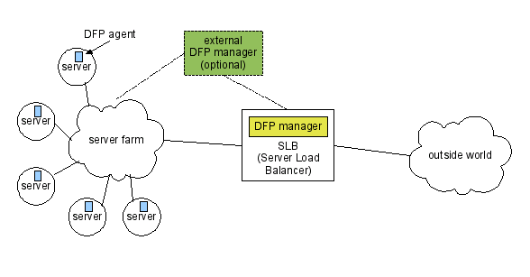

This is a reference multiplatform implementation of the Cisco Dynamic Feedback Protocol (DFP), used in server farms to perform fine-grained load balancing, as detailed in the draft-eck-dfp-00.txt internet draft.
The code uses Apache APR as its portability layer, and so it should be portable on any platform supported by APR: POSIX-like systems like FreeBSD and Linux, Windows and MacOS. Please note that the code has been built and run only on FreeBSD and Linux. You are more than welcome to port it to other plarforms, but be advised that this requires some work.
See the following files in the repository: draft-eck-dfp-00.txt, README.txt and the Doxygen-generated documentation under doc, and obviously the source code itself!
This code is being made available pursuant to the terms of the license agreement detailed in the LICENSE.txt file, which is the Cisco-style BSD License.
Please refer to
http://developer.berlios.de/projects/dfp/
for source code access. NOTE: you need to checkout from SVN, there
are no releases yet.